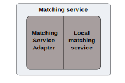

Local Matching Service¶
The purpose of a matching service is to find a match between a user’s verified identity and a record in a government service’s data sources. It allows the government service to be sure that the Jane Smith trying to access the service is the same Jane Smith already held on file.
Government services host their matching service within their security domain. A matching service is composed of the Matching Service Adapter (MSA) and a local matching service.

|
For more details, see the diagrams: |
Building a local matching service
You must build a local matching service to help you find a match between a user’s verified identity and a record in your existing database(s).
You must build a local matching service even if your connecting service does not need to match identities to existing records.
Follow the guidance on building a local matching service to:
- define your matching strategy
- respond to JSON matching requests
You can also refer to the example local matching service built by the Verify team and use the local matching service test tool to check your local matching service can handle matching effectively.
The Verify team can help you build and configure your local matching service. Contact idasupport+onboarding@digital.cabinet-office.gov.uk for help.